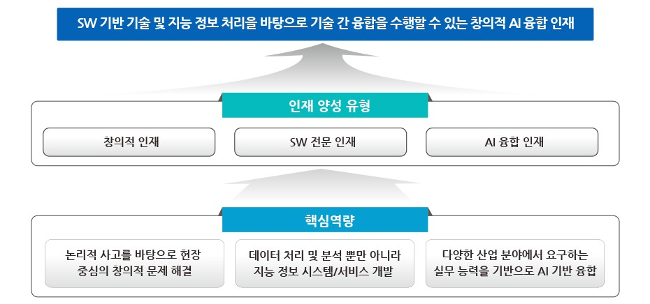

학과소개
4/22 2022
카테고리：교육목표
인공지능융합학과는 스스로 문제를 인식하고 해결하기 위한 방안을 도출할 수 있도록 창의적이고 논리적 사고를 배양하기 위한 교과 과정과 소프트웨어 개발에 필요한 소프트웨어 기반 이론 및 소프트웨어 개발 방법을 교육한다. 소프트웨어 기술을 기반으로 기술 융합 및 타 학문과의 연게를 위해 4차 산업혁명을 주도하는 지능정보처리에 대한 이론 뿐만 아니라 이를 실제 활용하기 위한 방법론을 교육한다. 또한, 빅데이터, 인공지능 기반 실무 개발 능력을 향상시키기 위한 교과과정을 중점적으로 운영한다.
• 논리적 사고를 바탕으로 문제를 인식하고 문제를 해결할 수 있는 창의적 인재 양성
• 데이터 처리 및 분석 뿐만 아니라 지능 정보 서비스 개발을 수행할 수 있는 S/W 전문 인재 양성
• 다양한 산업 분야에서 요구하는 실무능력을 기반으로 AI 기반 융합을 수행 가능한 융합형 인재 양성
